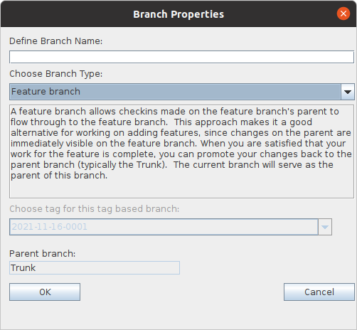

|
BranchesA Branch is a way to look at a QVCS project. When you first create a QVCS project, QVCS-Enterprise will automatically create the Trunk branch -- which is the default way of looking at a QVCS project. You can create additional branches of a project by right clicking on a branch node and selecting Define Branch... from the context menu. This will bring up a dialog allowing you to define the kind of branch you want to create. Child branches can be created from the Trunk, or from a Feature branch. Child branches cannot be created from a Release branch, or from a Read-only tag-based branch.  QVCS-Enterprise supports four different kinds of branches:
The Trunk branch is the default branch. There can be only one Trunk branch per project. When you create a project, this is the branch you start out with. It serves as the base for other branches. For a simple project, the Trunk branch may be the only branch you'll ever use. A Feature branch is the kind of branch you should use to work in isolation on some feature. Changes on its parent branch (usually the Trunk) become immediately visible to child Feature branches. They allow you to work on your feature and know what is changing on the feature branch's parent branch. Changes on a Feature branch can be promoted to its parent branch. A Release branch is similar to a Feature branch except that changes on the parent branch (usually the Trunk) are not visible to child Release branches. They allow you to work on your Release branch and remain isolated from changes on the parent branch. Changes on a Feature branch can be promoted to its parent branch. A Read-only tag-based branch is a branch constructed using a tag that you earlier applied to its parent branch. Given that tag, the branch will display what the parent project looked like at the time the given tag was created on the parent branch -- all filenames, file locations, and file revisions will be the names, locations, and revisions that were in use at the time the tag was created on the parent branch; also, any files that were deleted after the given tag will still show up. It's like a time machine. Child branches can be deleted if they are no longer needed. Any file revision data created on the branch is retained in the database. |
| For the source code, see https://github.com/jimv39/qvcsos |